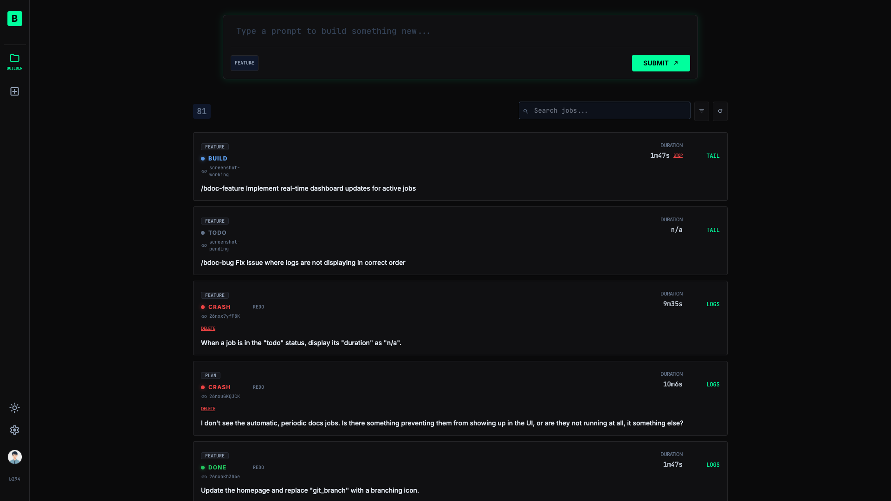
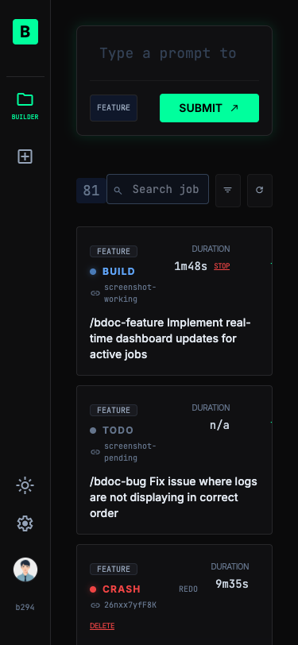

The app for indie builders who want to ship incredibly fast.
The personal agentic development platform designed for indie builders to move at light speed—from your desktop, phone, or tablet.


Automated Builds
Trigger builds automatically on every commit.
Git Integration
Seamlessly connects via Git+SSH to wherever you host your code repo, such as GitHub, GitLab, and Bitbucket.
Mobile Responsive UI
Build on the go! Our mobile-responsive interface allows indie builders to manage projects and monitor builds directly from their phones.
Fast & Reliable
Built for speed. The build system ensures your projects are processed quickly and reliably every time.
How it Works
Get up and running in minutes.
Connect Repo
Provide your Git SSH URL and credentials to link your project.
Configure Build
Set your working branch and build triggers in the intuitive settings panel.
Full Visibility
Every agentic change is logged in detail. Monitor build logs in real-time to see exactly how your code is being updated.
Ship Fast
Watch your jobs run and enjoy automatically updated code without manual intervention.
Build Anywhere
Launch and monitor builds directly from your mobile or desktop browser, giving you total freedom.